1 本日の内容
今回は、前回に引き続きC言語（C++）の環境構築および簡単なコードの実行を行います。C言語は、プログラミング言語の中でも特に歴史が古く、パソコン甲子園や競技プログラミングでもよく使用される言語です。またC++はゲーム作成をしたい人にぜひ覚えてもらいたい言語です。どちらも実行できるような環境を整えておきましょう。
2 C言語の環境構築
2.1 前提条件と注意事項
- この説明はWindows11の環境でのみ動作確認をしています。
- MinGWなどのインストールはchromeなどのedge以外のブラウザで行うようにしてください。edgeから正常にインストールできなかった事例がありました。
- ダウンロードを行う時はpathに全角が入らないようにしてください。ユーザー名が漢字フルネームで正常な処理ができなかった事例がありました。
-
今回紹介する方法があくまで一例であるので、他の方法で試していただいても構いません。この説明はプロ研入部の新一年生向けに作成しています。
おすすめの勉強法
自分でチャレンジしたいという人には、Youtubeやブログを見ながらやるのがおすすめです。これらのツールを使うメリットは情報の鮮度が高い（最新の情報が多い）ことです。今回の資料内容もインターネット上に結構上がっているので、できそうな人は調べて自力でやってみましょう。
参考例（Youtube） 競技プログラミングの環境構築 [VSCode+WSL+AtCoder Library]【ゆっくり解説】
2.2 MinGWのインストール
MinGW（ミンジーダブリュー）とは、Windows上でC言語やC++などのプログラムを作って実行できるようにするための「開発環境の一部」です。正式には「Minimalist GNU for Windows」の略です。
通常、C言語やC++で書いたプログラムは、そのままでは動かず、コンパイルという作業を行って、コンピュータが理解できる形に変換する必要があります。MinGWには、このコンパイルを行うためのソフト（コンパイラ）が含まれており、Windowsでも簡単にプログラムを動かせるようになります。
また、MinGWは軽量でシンプルなのが特徴で、余計な機能が少なく、初学者でも比較的扱いやすい環境です。インストールすると、コマンドプロンプトからプログラムをコンパイルして実行できるようになります。
インストール作業
まず初めにサイトにアクセスしてMinGWのインストールを行います。画像の矢印で示されいているMinGW-W64 online installerの文字をクリックしダウンロードを開始します。この時ダウンロード先は任意の場所に保存してください。どこにダウンロードしても構いませんが、ここではダウンロードに保存しました。 ダウンロードが完了したらダウンロードしたファイルを開きます。
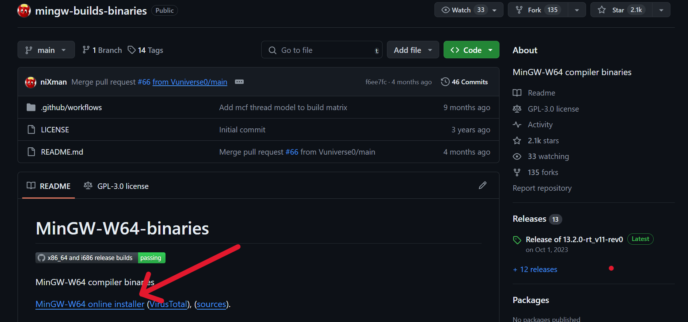
このような警告が出ると思いますが問題ないので、実行を押します。
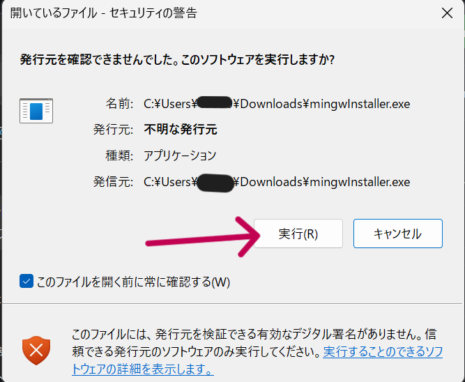
このような画面が表示されたら、そのままNext→を押してください。
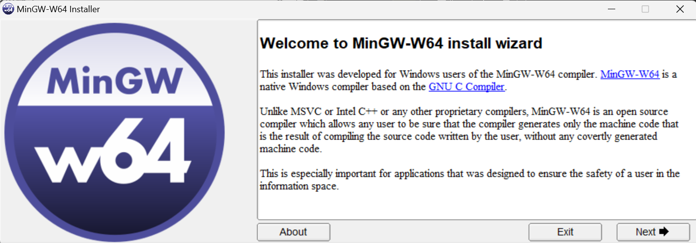
バージョンの選択画面が表示されたら13.2.0を選択しNext→を押してください。
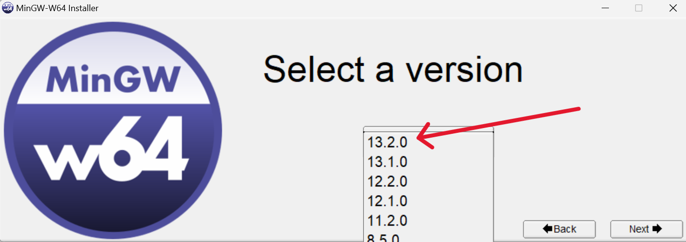
64bitを選択しNext→を押してください。
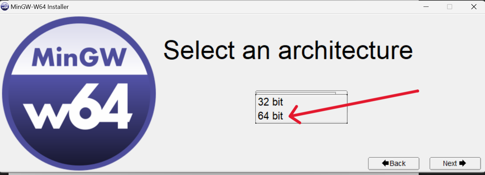
次の画面ではwin32を選択してNext→を押します。
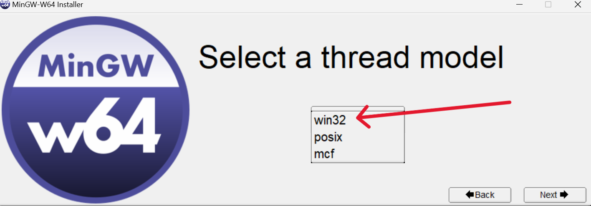
ここではすでにrev1が選択されていると思うのでそのままNext→を押してください。
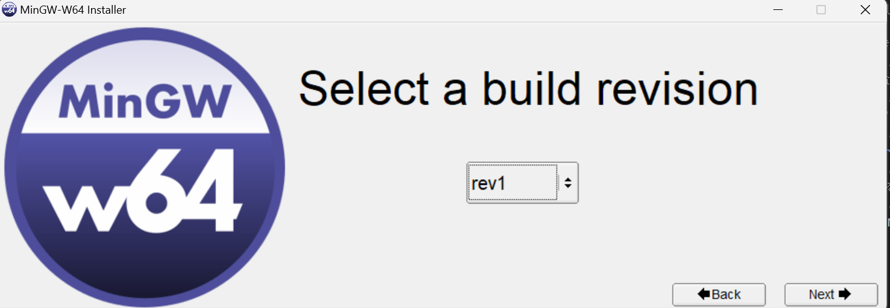
ここでもすでにmsvcrtが選択されていると思うのでそのままNext→を押してください。
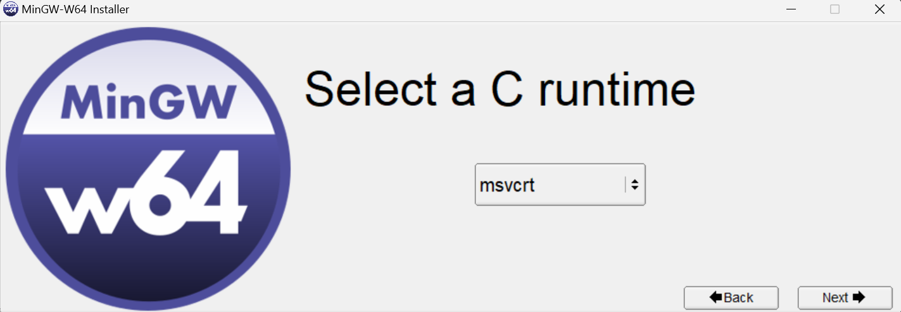
この画面でMinGWを保存する場所を決めますが、
C:/Users/ユーザー名/になっているかを確認して下さい。違う場合はchooseから変更してください。選択できていることが確認ができたら、Installを押してそのままインストールしてください。終了後finishを押してパソコンを再起動したらインストール作業は終了です。
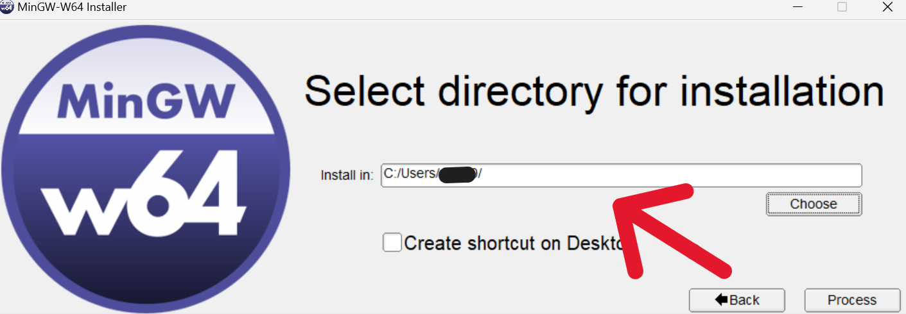
pathの設定
次にpathの設定を行います。PC画面下のタスクバーかウィンドウズボタンを押して、検索画面に環境変数と入れて環境変数の編集を開きます。
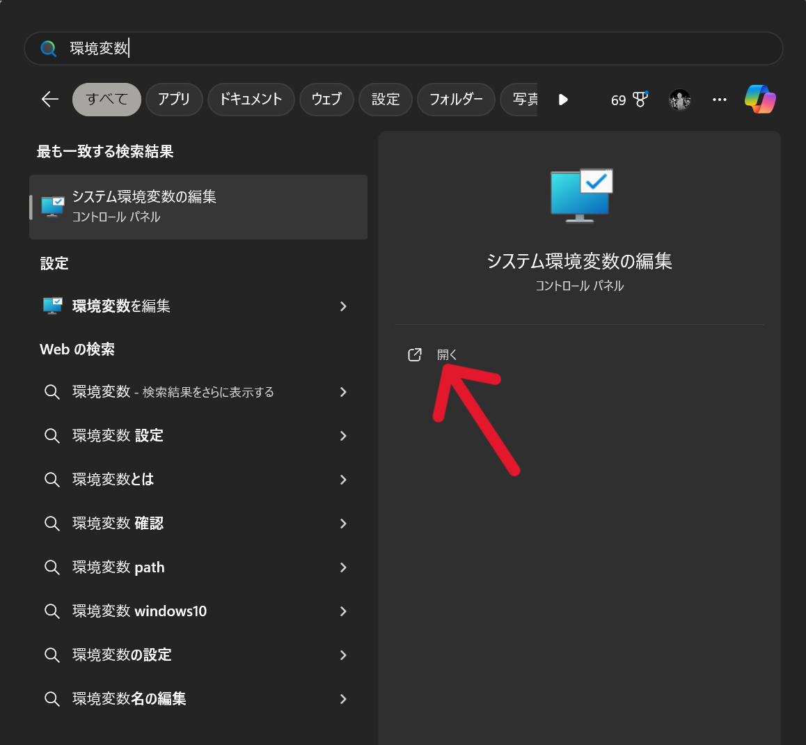
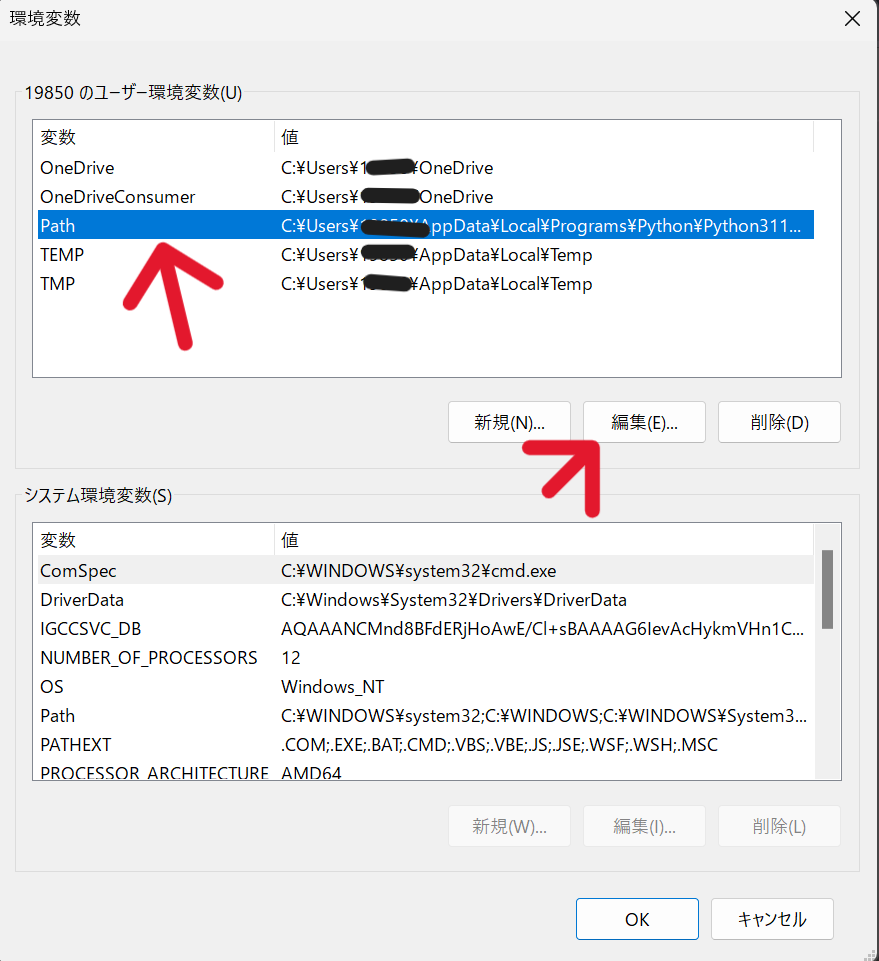
この画面が表示されたら、矢印で示しているPathを選択し編集を押します。
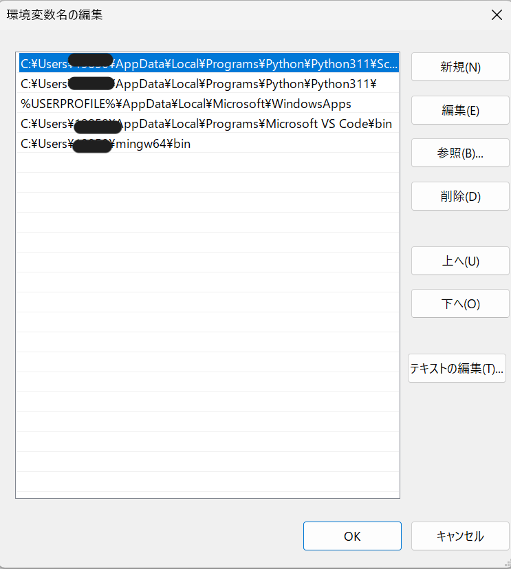
この小ウィンドウが表示されたら新規を押して、
C:/Users/ユーザー名/mingw64/binと入力します。このときユーザー名の部分を必ずあなたの名前に変更してください。登録ができたらOKを押して画面をすべて閉じたらパソコンを一度再起動します。
再起動が終わったらターミナル（コマンドプロンプト）を先ほどと同様に検索窓から検索して開きます。
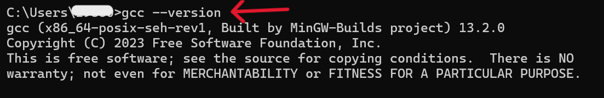
コマンドプロンプトで
gcc --versionと入力してください。gccと--versionの間には半角スペースを忘れずに入れてください。入力できたらEnterキーを押して、上記の画像のような出力ができているかを確認して下さい。この出力が表示されて入ればMinGWの設定は終了です。
設定がうまくいかないとき
先ほど使用したコマンドプロンプトのプラスマークの横のマークからか検索窓から検索をしてWindows PowerShell を開きます。そこで$ENV:Pathと入力し出力を確認します。出力結果の中に先ほど入力したC:/Users/ユーザー名/mingw64/binがあるかを確認し，なければ，$ENV:Path="C:/Users/ユーザー名/mingw64/bin"を入力し再度再起動してもう一度確認作業を行ってください。これでしっかりとpathが登録できていれば、コマンドプロンプトでの確認作業に戻り正常に動作していれば終了してください。これでも解決しない場合は、先輩に聞いたりエラーや状態を検索するか、もう一度pathの追加の部分からやり直してみてください。
Visual Studio Codeの設定
前回の資料で紹介した、2.1 Visual Studio Code についての補足の章になります。追加でインストールしておいてほしい拡張機能を羅列しているので、インストールしてください。- ms-vscode.cpptools-extension-pack
- formulahendry.code-runner
文字化け対策
プログラミングでは文字を出力するときに英語を使用することが多いです。しかし、言語や場合によっては日本で文字を表示したいときがあると思います。何も設定せずに日本語をプログラムに混ぜると文字化けが起こることがあります。今後プログラミングを進めていく中で、文字化けが発生したときはこちらを参考に直してください。（あらかじめやっておくことを推奨します。）
-
前章のCode Runnerの設定に戻って、Code-runner: Executor Mapを探し、その下にあるsetting.jsonで編集をクリックします。
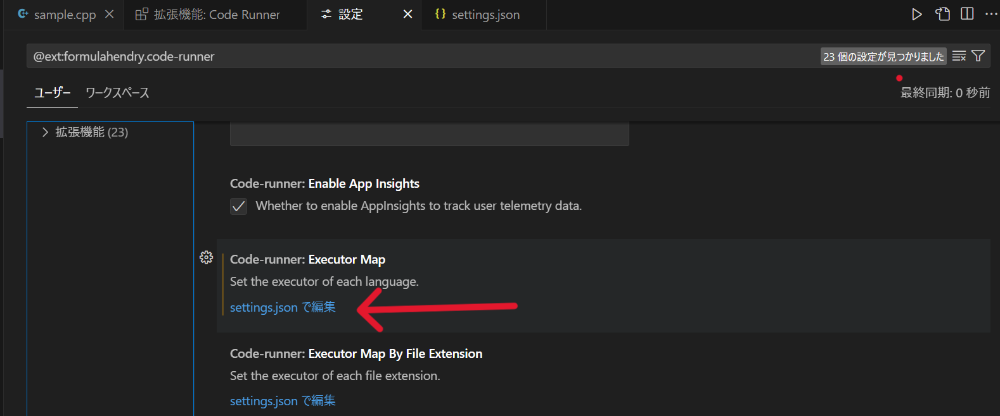
-
下の画像に矢印で示した2行を変更していきます。まず画像の12行目C言語の設定をしていただきます。デフォルトではダブルクオーテーション内が
"cd $dir && gcc $fileName -o $fileNameWithoutExt && $dir$fileNameWithoutExt"となっていますが、"cd $dir && gcc -fexec-charset=CP932 $fileName -o $fileNameWithoutExt && $dir$fileNameWithoutExt"に変更してください。
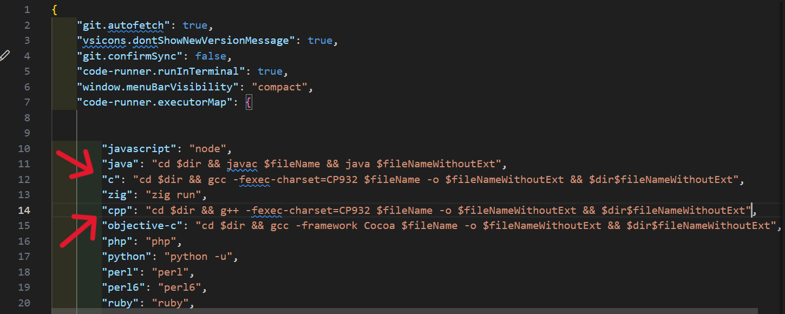
-
次に画像の14行目C++の設定をしていきます。デフォルトではダブルクオーテーション内が
"cd $dir && g++ $fileName -o $fileNameWithoutExt && $dir$fileNameWithoutExt"となっていますが、"cd $dir && g++ -fexec-charset=CP932 $fileName -o $fileNameWithoutExt && $dir$fileNameWithoutExt"に変更してください。
3 プログラミング入門
我々はここまででよく使われているPythonとC（C++）を動かすための環境構築をやってきました。ここからは、正しく環境構築ができているかの動作確認も兼ねて、少しだけ簡単なプログラムを書いて動かしてみたいと思います。
3.1 Hello, World!
プログラミングを始めるときに最初に書くことが多いのが、Hello, World!というプログラムです。これは、画面に「Hello, World!」と表示するだけの簡単なプログラムで、プログラミングの環境構築をしたときの動作確認としてもよく使われる挨拶がわりのプログラムです。ここでは、PythonとC++でHello, World!を書いてみましょう。
まずエクスプローラで適当な場所にHelloWorldという新しいフォルダを作成します。フォルダを右クリックしてCodeで開くをクリックしてください。
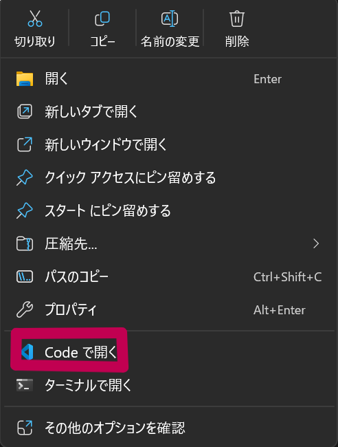
VS Codeが開くと思います。右上のHELLOWORLDの横にあるアイコンを見てください 👈このアイコンがファイルを作るアイコンになります。ワンクリックすると下に枠が表示されると思うので、
HelloWorld.pyとHelloWorld.cppという名前でファイルを2つ作成してください。.pyと後ろに付けるとPythonのコード、.cppと後ろに付けるとC++のコードになります。
ファイルができたら、
HelloWorld.pyを開いて、下のコードをコピペしてください。
print("Hello, World!")次に
HelloWorld.cppを開いて、下のコードをコピペしてください。
#include <iostream>
int main() {
std::cout << "Hello, World!" << std::endl;
return 0;
}コードを入力できたら、
Ctrlキー + shiftキー + @キーでターミナルを開きます。両方のファイルで右上のボタン横のを押してRun Codeで実行してください。ターミナルに「Hello, World!」と表示されれば成功です。
これで出力の確認ができました。今回は簡単な英文を表示するだけでしたが、2つのコードを見比べると同じことをしているのに全然違う記述をしていることがわかるかと思います。日本語と英語のようにプログラミング言語にも記述のルールがあります。今後はこのルールを少しずつ理解していき、プログラムを作れるようになっていきましょう。
次回の部活までにしてきてほしいこと
次回以降はVS Codeの操作に慣れてもらうために、一度PythonやC++を離れて、HTMLとCSSという簡単な言語を扱っていきます。今後競技部門に行きたい人は読み飛ばして先にPythonやC言語の内容に進んでもらっても構いません。HTMLとCSSは、Webサイトを作るための言語で、HTMLはWebサイトの構造を作るための言語、CSSはWebサイトの見た目を整えるための言語になります。次回までに、興味のある人はHTMLとCSSについて簡単に調べてみてください。特にHTMLは、タグと呼ばれる記号を使って文章の構造を作ることができるので、タグについて調べてみてください。